말 그대로 "단어가 혀끝에서 맴돌기만 하고 튀어나오지 않는 현상"을 뜻합니다.
뇌 속의 '개념(의미)'과 '시각(이미지)' 정보는
활성화되었으나, 그것을 인출하는
'음운(소리/단어)' 정보로 가는 통로가 순간적으로 차단되었을 때 발생합니다.
정보가 뇌 저장소에서 완전히 사라진 것(망각)이 아니라, 저장되어 있는 장소를 찾지
못하는 상태입니다. 특히 과거의 유사한 기억이나 단어가
방해를 놓아 진짜 찾아야 할 단어의 길을 막는 것을 순행 간섭이라고 합니다. 다른 엉뚱한 단어만 계속 떠오르는
이유가 바로 이 때문입니다.
의학적으로 사물의 이름만을 대지 못하는 증상을 뜻합니다.
뇌 손상으로 인한 병리적 상태를 뜻하기도 하지만, 정상인들도 피로나 스트레스, 노화
등으로 인해 일시적인 '기능적 명칭 실어증'을 빈번하게 겪습니다. 사물의 용도와
모양은 완벽하게 인지하지만, 이름표를 붙이는 뇌의 '좌측
측두엽-두정엽' 부위의
회로가 일시적으로 먹통이 된 상태입니다.
인간의 뇌는 정보를 '시각적 형태'와 '언어적 형태' 두 가지 방식으로 나누어
저장합니다. 모양은 기억나는데 이름이 안 나는 현상은 시각적
표상은 매우 강하게
자극되었으나, 그와 연결된 언어적 표상의 뉴런 고리가 느슨해졌거나 활성화 임계값을 넘지 못해 발생합니다. 즉, 뇌의 '보는
컴퓨터'는 켜졌는데 '말하는 프린터'의 케이블이 빠진 셈입니다.
이에 본 사이트는 [이름은 기억나지 않고 오직 모양만 떠오르는 물건들]을
모아 놓은 아카이브입니다.
단순 물건이 아닌, 이름을 자주 까먹는! 모양은 아는데 이름을 잘 모르는!
물건을 위주로 모아 놓았습니다.
물건을 찾으러 가볼까요?